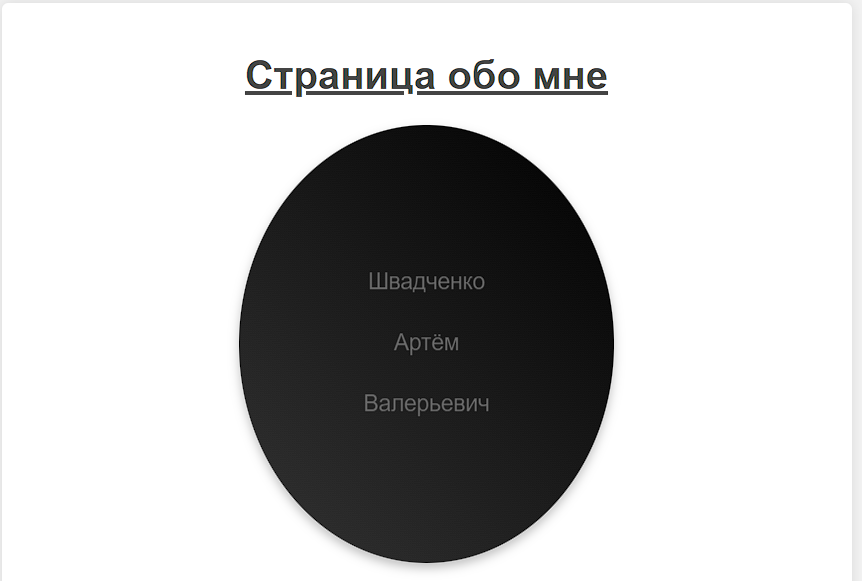
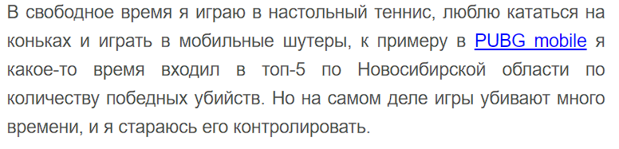
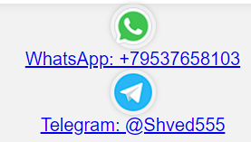

1) Цель: познакомиться со структурой HTML-документа, создать страничку со своей презентацией, проявить творческий подход.
2) Ход выполнения работы:
2.1) Изначально была продумана концепция сайта.
Было принятно решение о том, что личная фотография будет с анимацией.

2.2) После был реализован блок с информацией обо мне. В этой информации была добавлена ссылка на игру PUBG mobile.

2.3) Блок с моими контактными данными сделан с иконками соцсетей WhatsApp и Telegram, к которым были прикреплены соответствующие ссылки. Иконки, при наведении на них мыши прокручиваются на 360 градусов

3) Вывод:
В ходе этой работы вспомнили основы работы с html. Научились с нуля работать с языком стилей css, в частности благодаря сайту htmlacademy.ru. Были реализованы интересные анимации изображений.